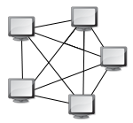

La topologie des réseaux informatiques
Une topologie de réseau informatique correspond à l'architecture de celui-ci, définissant les liaisons entre les équipements du réseau et une hiérarchie éventuelle entre eux.
Elle peut définir la façon dont les équipements sont interconnectés et la représentation spatiale du réseau, c'est la topologie physique. Elle peut aussi définir la façon dont les données transitent dans les lignes de communication, c'est la topologie logique. Parmi la topologie physique, on distingue 5 topologies différentes.
 Une topologie en bus est l'organisation la plus simple d'un réseau. En effet, dans une topologie en bus, tous les ordinateurs sont reliés à une même ligne de transmission par l'intermédiaire de câbles, généralement coaxiaux.
Une topologie en bus est l'organisation la plus simple d'un réseau. En effet, dans une topologie en bus, tous les ordinateurs sont reliés à une même ligne de transmission par l'intermédiaire de câbles, généralement coaxiaux.
Le bus s’étend sur toute la longueur du réseau et les machines viennent s’y accrocher, mais le signal n’étant jamais régénéré, la longueur du bus est donc limitée. Une seule station émet sur le bus : lorsque celle-ci émet des informations, la trame circule sur la toute la longueur du bus et la station destinataire peut les récupérer. Cette technologie a l’avantage de ne pas être perturbée par la panne d’une machine du réseau, par contre en cas de rupture de ce bus, le réseau devient inutilisable.
L'exemple le plus courant de ce type de réseau était le réseau Ethernet, mais aujourd'hui l'Ethernet moderne n'est plus en bus.
 La topologie en anneau se caractérise par une connexion circulaire de la ligne de communication, chaque station dans le réseau est un nœud..
La topologie en anneau se caractérise par une connexion circulaire de la ligne de communication, chaque station dans le réseau est un nœud..
A la différence de la topologie en bus, le signal est régénéré par chaque station. Par contre, la panne d’une station rend l’ensemble du réseau inutilisable du moins dans un sens.
Cette topologie a été développée par IBM et est principalement utilisé dans les réseaux Token Ring et FDDI.
Dans une topologie en étoile, un concentrateur réseau fait office de nœud central. Cela peut être un switch ou un hub, éventuellement un routeur Ethernet si ce nœud sert à relier deux réseaux différents. Chaque périphérique est connecté dessus par un câble RJ45 ou par de la fibre dans certains cas.
Le premier avantage de cette topologie est la facilité pour le câblage, en effet un simple câble vers le nœud central permet de relier l'équipement au réseau. Le deuxième est lié à la détection des pannes : un câble défectueux ne déconnecte qu'un ordinateur, pas les autres comme en bus. Une panne de switch provoque la déconnexion de tous les ordinateurs branchés dessus mais est facile à détecter.
Dans le cas d’un inter-réseau composé de routeurs interconnectés, l’information peut suivre divers itinéraires en fonction de l’état et de la capacité des liens physiques. Ceci est possible grâce à des protocoles de routage dynamique. Le principal avantage de ce type de topologie est l’adaptabilité : une ligne coupée ne perturbe pas les communications, d'où son utilisation dans les réseaux sensibles tels qu'Internet. Mais son défaut est la difficulté technique liée aux concentrateurs dans chaque nœud.
Le sommet, de haut niveau, est connecté à plusieurs nœuds de niveau inférieur dans la hiérarchie. Ces nœuds peuvent être eux-mêmes connectés à plusieurs nœuds de niveau inférieur formant ainsi un arbre, ou une arborescence. Le point faible de ce type de topologie réside dans l'ordinateur "père" de la hiérarchie car s'il tombe en panne, il paralyse alors la moitié du réseau.